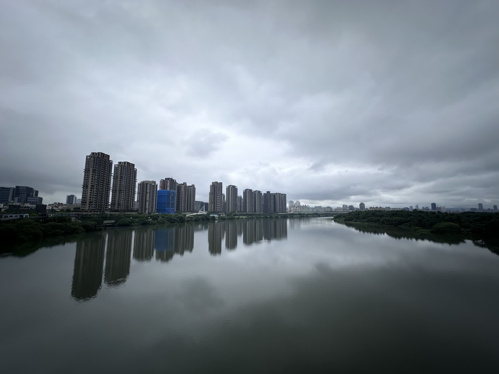
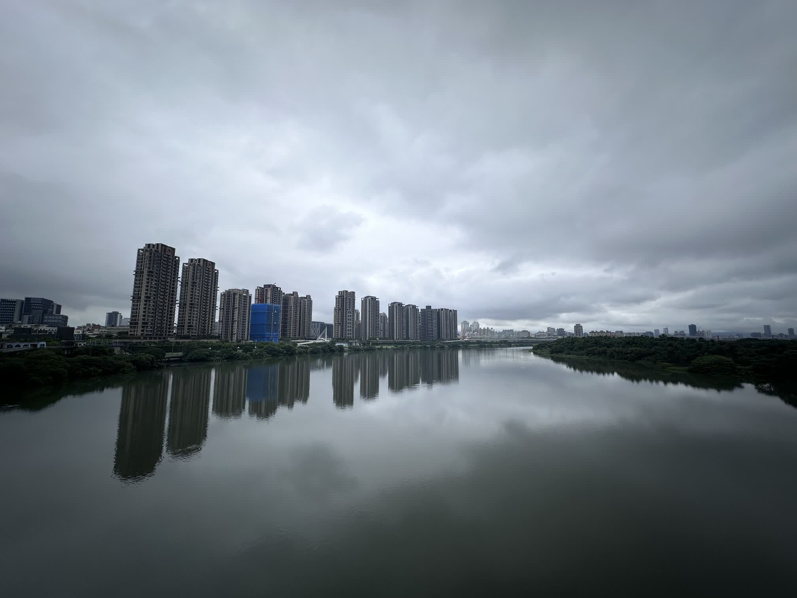

Anson Chiu
New Taipei City, Taiwan · 0919-283696 ·
yutsungchiu@email.com
Hi, I’m Anson. I am passionate about Computer Vision, 3D scanning, and reconstruction. With years of experience in this industry, I have honed my skills in transforming complex data into meaningful visual representations. My work reflects my commitment to innovation and excellence in these cutting-edge fields. I invite you to explore my portfolio and see how my expertise can bring ideas to life.


 
